Module 03: Virtual Private Cloud (VPC)
Agenda & Learning Objectives
- VPC Concept & Architecture
- Subnet Planning
- Routing
- Network Security
- Enterprise Connectivity
- Advanced Features
- Pricing Model
Why Do We Need Isolation?
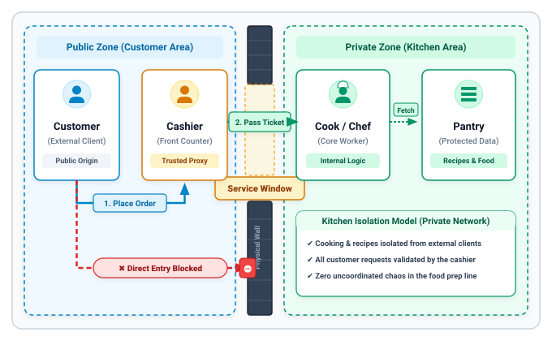
Public vs. Private Subnets
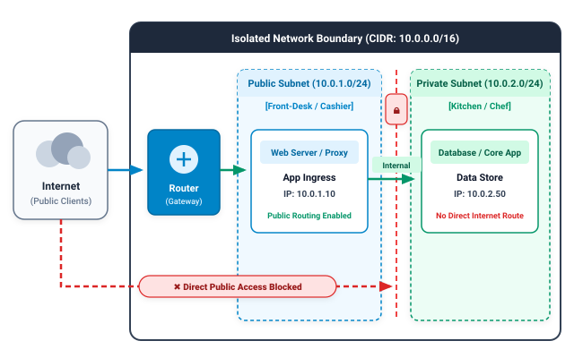
Network Partitioning
- Network Router: Directs traffic between the external internet and internal subnets based on defined routing tables.
- Public Subnet (The Cashier): Houses customer-facing services (Web Servers, API Gateways, Reverse Proxies) with public IP routing.
- Private Subnet (The Kitchen): Houses core databases and application business logic with zero direct internet route.
Core Architectural Advantages
- Zero Direct Public Exposure: Backend databases cannot be scanned or targeted by external internet attackers.
- Controlled Inter-Subnet Flow: Only authorized application proxies in the public subnet can query the database over internal private routes.
- Defense-in-Depth: Even if a public-facing web server is compromised, the internal subnet firewall and boundary prevent lateral movement to core data stores.
What is a Virtual Private Cloud (VPC)?
A Virtual Private Cloud (VPC) is an isolated private network built on Alibaba Cloud.
You can think of a VPC as your own customized private network environment in the cloud. It allows you to select your own private IP address ranges (CIDR blocks), subdivide networks into subnets across zones, and define custom security rules. Each VPC is logically independent and completely isolated from other tenants.
🔒 Private & Isolated
Complete logical isolation at the network layer prevents unauthorized access between VPCs.
📐 Custom Address Space
Full control over private IP address planning (CIDR blocks) without conflicting with existing networks.
🛡️ Controllable Security
Implement defense-in-depth traffic filtering using Security Groups and Network ACLs.
⚡ High Availability
Deploy vSwitches across multiple Availability Zones to ensure uninterrupted multi-zone redundancy.
🔗 Hybrid Interconnection
Connect seamlessly to on-premises data centers or other VPCs via VPN, Express Connect, or CEN.
VPC Architectural Components
- VPC (Regional Scope): The top-level software-defined network boundary tied to a single Alibaba Cloud Region. Defines the master IP address block.
- vRouter (Virtual Router): The central routing hub connecting all subnets within the VPC and serving as the default gateway to external networks. Each VPC has exactly one logical vRouter.
- vSwitch (Virtual Switch): A subnet dividing the VPC CIDR block, physically anchored inside a single Availability Zone.
- Route Tables: Directs traffic forwarding based on destination CIDR blocks and designated next-hop targets.
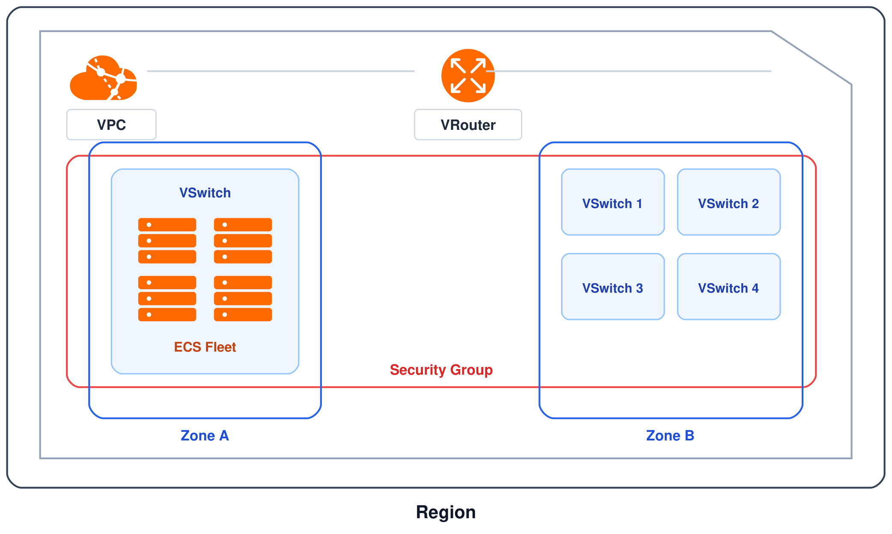
Underlying Technology
Alibaba Cloud VPC relies on Virtual Extensible LAN (VXLAN), an industry-standard network virtualization tunneling protocol:
- MAC-in-UDP Encapsulation: Encapsulates Layer 2 virtual Ethernet frames generated by virtual machines into standard Layer 3 physical UDP packets.
- 24-bit Tunnel ID (VNI): Provides up to 16,777,216 (16 million) unique virtual network identifiers, surpassing the legacy 4,096 VLAN limitation.
- Underlay Independence: Tenant virtual networks (Overlay) operate seamlessly over physical datacenter spine-leaf fabrics (Underlay) without altering physical switch configurations.
- Strict Isolation Rule: Compute instances can only communicate directly over the private network if their traffic carries the exact same 24-bit VXLAN Tunnel ID.
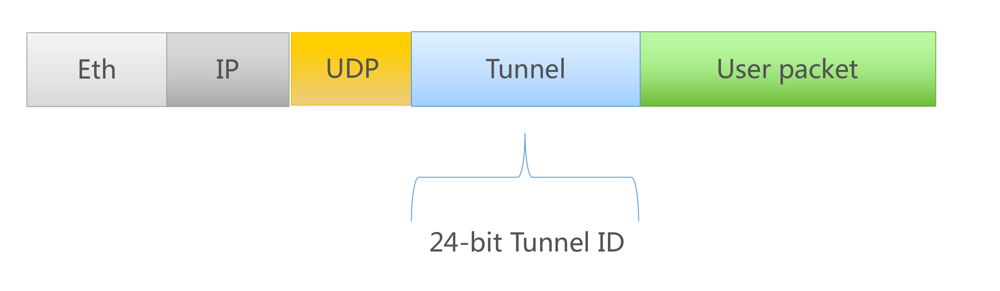
Underlying Technology (cont.)
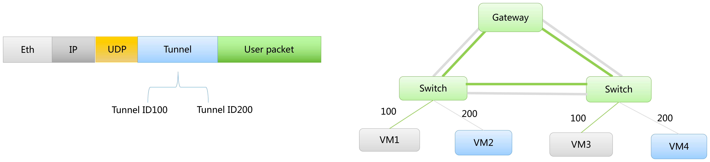
IPv4 Address Planning
| RFC 1918 CIDR Block | Supported Prefix Range | Total IP Capacity | Recommended Enterprise Workload |
|---|---|---|---|
10.0.0.0/8 |
/8 to /24 |
16,777,216 addresses | Large-scale enterprise environments, hyper-scale Kubernetes (ACK) clusters, multi-tier microservices. |
172.16.0.0/12 |
/12 to /24 |
1,048,576 addresses | Medium to large enterprises, standard production VPCs, regional core data backends. |
192.168.0.0/16 |
/16 to /24 |
65,536 addresses | Departmental networks, branch offices, development/testing isolated sandboxes. |
Non-Overlapping Subnets
When designing VPCs destined for hybrid interconnectivity (via CEN, Express Connect, or VPN), ensure that the VPC CIDR block never overlaps with your on-premises datacenters or peer VPCs. Route propagation fails on overlapping CIDRs!
Subnet Mask Constraints
Alibaba Cloud VPC primary IPv4 CIDR blocks must have a subnet mask between /8 and /24. Subnet masks wider than /8 (e.g. /7) or narrower than /24 (e.g. /25) are not supported as primary VPC CIDR blocks.
Secondary CIDR Blocks & IPv6 Dual-Stack
Secondary IPv4 CIDR Blocks
If an existing VPC runs out of private IP capacity due to rapid business growth or container pod density:
- Zero Workload Disruption: Attach up to 3 secondary IPv4 CIDR blocks to an existing VPC without stopping instances or rebuilding routing.
- Flexible Allocation: Can be standard RFC 1918 blocks (e.g. adding
172.16.0.0/12to a10.0.0.0/8VPC) or custom user CIDRs. - Dedicated vSwitches: Create new vSwitches bound to the secondary CIDR to host high-density container fleets.
IPv6 Dual-Stack Architecture
Native modern IPv6 addressing for global internet compliance and direct device addressability:
- Automatic /56 Allocation: Alibaba Cloud automatically allocates a globally unique
/56IPv6 CIDR block when IPv6 is enabled on a VPC. - /64 Subnet Slicing: Subdivide the VPC IPv6 block into
/64subnets assigned to individual vSwitches. - IPv6 Gateway: Provides granular internet egress and ingress control for IPv6 traffic with configurable bandwidth packages.
Multi-Zone vSwitch Architecture
- Strict Zonal Anchor: A vSwitch resides inside exactly one Availability Zone. A vSwitch can never span across multiple physical zones.
- Subnet Mask Range: A vSwitch mask must be between /16 and /29, and its CIDR block must be a strict subset of the VPC's primary or secondary CIDR blocks.
- Intra-VPC Routing: By default, all vSwitches inside the same VPC can communicate with each other over high-speed backbone private links with zero routing configuration required.
- System Quotas: Each VPC supports up to 24 vSwitches by default (expandable via quota application).
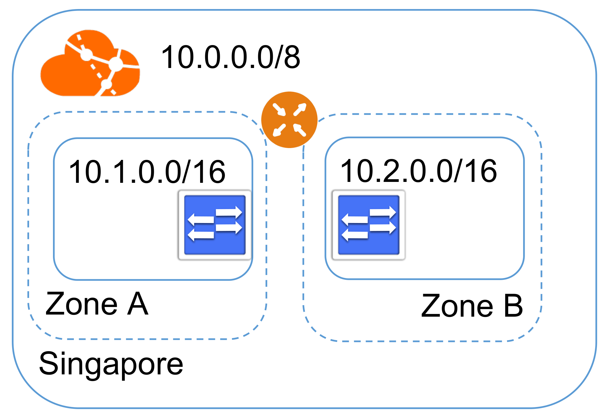
System-Reserved IP Addresses
| Reserved IP | Position | System Role & Function |
|---|---|---|
x.x.1.0 |
First IP (Network ID) | Network Identifier: Identifies the subnet boundary in standard IP routing. |
x.x.1.1 |
Second IP (.1) | Default Gateway: Assigned to the virtual router interface (vRouter) inside the vSwitch. |
x.x.1.2 |
Third IP (.2) | DNS / DHCP Service: Reserved by Alibaba Cloud to deliver internal DNS and DHCP services. |
x.x.1.3 |
Fourth IP (.3) | Cloud Infrastructure Service: Reserved for internal cloud management and SDN fabric operations. |
x.x.1.255 |
Last IP (Broadcast) | Broadcast Address: Standard broadcast address of the CIDR block. |
Host Capacity Calculation Formula
For any vSwitch subnet with prefix length P, total usable host IP addresses are calculated as:
Usable Host IPs = 2(32 − P) − 5
Example: A /24 vSwitch has 256 total IP addresses. Subtracting the 5 system-reserved IPs leaves exactly 251 usable IP addresses for ECS instances, RDS databases, and Server Load Balancers.
System Route Table
- Automated Provisioning: Created automatically when the VPC is created. Bound to all vSwitches by default.
- Permanent Existence: The System Route Table cannot be deleted, ensuring the VPC always retains a functional baseline forwarding plane.
- Default Local Route: Contains an uneditable system entry pointing the entire VPC CIDR block to next-hop
Local. - Zero-Configuration Intranet: Default
Localroute entries allow ECS instances across different vSwitches and zones within the VPC to communicate freely without manual routing configuration. - Extensibility: Custom route entries (e.g.
0.0.0.0/0pointing to a NAT Gateway or VPN) can be added to the System Route Table.
Sample Route Table Entries
| Destination CIDR | Next Hop Type | Route Type |
|---|---|---|
10.0.0.0/8 |
Local |
System (Non-editable) |
100.64.0.0/10 |
Local |
System (Alibaba Cloud Services) |
0.0.0.0/0 |
NAT Gateway |
Custom (Internet Egress) |
Custom Route Tables
By default, all vSwitches share the System Route Table. Associating a Custom Route Table with a specific vSwitch overrides system routing for that subnet:
- DMZ / Public Subnet: Associated with a custom route table pointing
0.0.0.0/0to an Internet NAT Gateway or secondary firewall ENI. - Private Backend Subnet: Associated with a route table containing no internet route, isolating microservices from external exposure.
- Database Subnet: Locked down with only local intra-VPC routes, blocking direct outbound connections.
- Binding Rule: A vSwitch can be associated with exactly one Route Table at any given time (either the System Route Table or a single Custom Route Table).
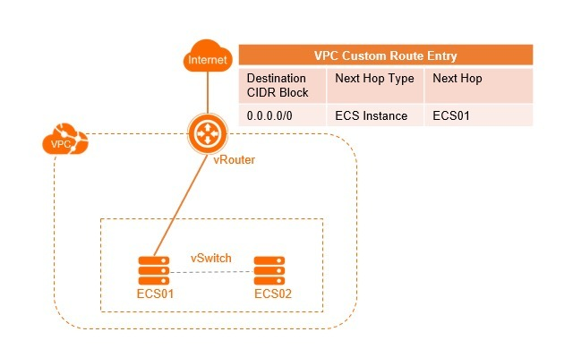
Gateway Route Tables
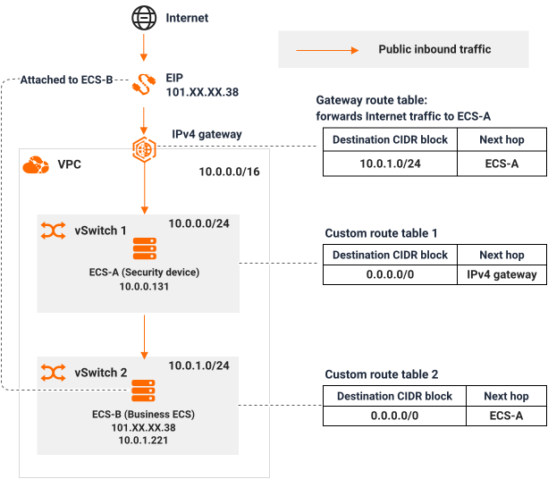
In-Line Inspection Workflow
- Traffic Ingress: Internet request arrives at the VPC boundary via the IPv4 Gateway.
- Gateway Route Match: Gateway Route Table intercepts traffic and forwards destination CIDRs to the Firewall ECS instance ENI.
- Threat Inspection: The firewall inspects, decrypts, and sanitizes the packets.
- Internal Forwarding: The firewall forwards approved packets to the backend application vSwitch.
Defense-in-Depth Network Security
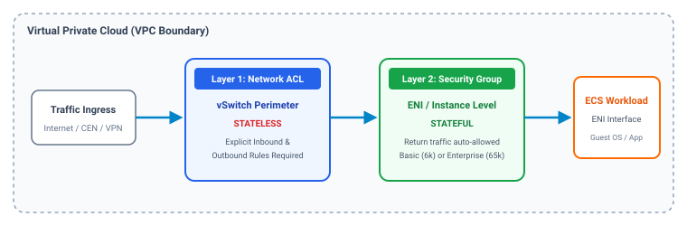
1. Subnet Perimeter
Network ACLs: Stateless virtual firewalls at the vSwitch boundary controlling traffic entering and leaving entire subnets.
2. Interface Perimeter
Security Groups: Stateful virtual firewalls bound to Elastic Network Interfaces (ENIs) securing individual ECS instances.
3. Database Perimeter
IP Whitelists: Database-level IP access control filtering connections to PolarDB and ApsaraDB for RDS clusters.
Network ACLs
Stateless Packet Filtering
- vSwitch Boundary: Associated directly with one or more vSwitches, acting as the subnet-level shield.
- Strictly Stateless: Inbound and outbound traffic are evaluated completely independently! Each packet is filtered without session state tracking.
- Ephemeral Port Requirement: If inbound port 443 is allowed, you must configure an explicit outbound rule for client ephemeral return ports (1024–65535).
- Rule Priority: Evaluated sequentially from highest priority (1) to lowest (32,766). Once a packet matches a rule, evaluation halts immediately (first match wins).
- Default Deny Action: If no user-defined rules match a packet, the default rule automatically blocks all incoming and outgoing traffic.
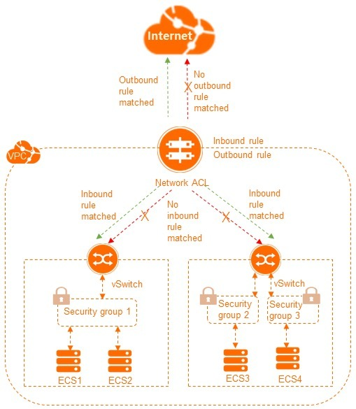
Security Groups
Stateful Packet Inspection
- ENI Association: Attached directly to Elastic Network Interfaces (ENIs). Each instance/ENI can belong to up to 5 security groups.
- Stateful Tracking: If an inbound connection is permitted by an ingress rule, the corresponding outbound response packet is automatically permitted, regardless of outbound rules.
- Bidirectional Return Flow: Similarly, outbound requests initiated by the instance automatically permit inbound response packets.
- Precedence Rule: Evaluated in priority order (1 = highest). If rules conflict at the same priority, Drop takes precedence over Accept.
- Default Outbound: By default, all outbound traffic from an instance is allowed, while inbound is blocked unless explicitly permitted.
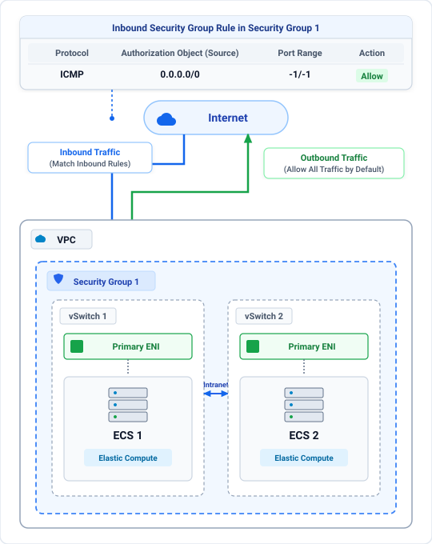
Basic vs Enterprise Security Groups
Basic Security Groups
- Scale Capacity: Supports up to 2,000 instances and 6,000 private IP addresses per VPC.
- Default Intra-Group Policy: Instances within the same basic group are interconnected by default (all intranet ports open between members).
- Group ID Referencing: Supports referencing another Security Group ID (
sg-xxxx) as the source/destination authorization object in security rules. - Target Workloads: Standard multi-tier web applications, monolithic architectures, and traditional enterprise server topologies.
Enterprise Security Groups
- Hyper-Scale Capacity: Supports up to 65,536 private IP addresses per VPC (optimized for high-density container fabrics).
- Zero-Trust Intra-Group Isolation: Instances within the same group are isolated by default (zero mutual intranet traffic unless explicitly allowed).
- CIDR-Only Rules: Rules must specify IP CIDR blocks or prefix lists (Group ID referencing is not supported).
- Strict Type Mixing Constraint: All security groups associated with an instance or ENI must be of the exact same type (cannot mix Basic and Enterprise on one interface).
Network ACL vs Security Group
| Dimension | Network ACL (Outer Shield) | Security Group (Inner Shield) |
|---|---|---|
| Operating Level | Subnet Level: Bound to entire vSwitches. | Interface Level: Bound to ENIs / compute instances. |
| Inspection Mode | Stateless: Inbound and outbound evaluated independently. | Stateful: Return traffic automatically permitted. |
| Rule Evaluation | Strict Order: Evaluated by priority (1 to 32,766). First match wins. | Aggregate Evaluation: Drop overrides Accept at same priority. |
| Supported Actions | Accept and Drop. | Accept and Drop. |
| Default Action | Denies all traffic if no rules exist. | Denies all inbound traffic; allows all outbound by default. |
| Association Ratio | 1 vSwitch can be bound to only 1 Network ACL. | 1 ENI can be bound to up to 5 Security Groups. |
| Target Referencing | Supports IP addresses and CIDR blocks only. | Supports IP/CIDRs and Security Group IDs (Basic mode only). |
Internet Ingress & Egress
Elastic IP (EIP)
- Independent Lifecycle: Detach from one instance and reattach to another without changing external DNS.
- Flexible Targets: Bind to ECS instances, secondary ENIs, internal SLB, or NAT Gateways.
- Shared Bandwidth: Aggregate multiple EIPs under an Internet Shared Bandwidth package to cut transit costs.
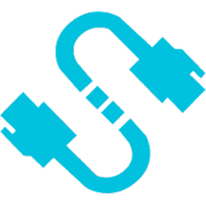
Source NAT (SNAT)
- Source NAT: Allows hundreds of private ECS instances without public IPs to access the internet (software updates, API calls).
- Address Masking: Hides internal private IP addresses behind shared public EIPs.
- High Concurrency: Up to 1 million concurrent sessions per gateway.
Destination NAT (DNAT)
- Destination NAT: Exposes internal private ECS ports to public internet users.
- Port Translation: Map public port 80/443 to internal custom ports (e.g. port 8080).
- High Reliability: Multi-zone disaster recovery with zero single points of failure.
Cloud Enterprise Network (CEN)
- Legacy Mesh Peering Limitations: Point-to-point VPC Peering requires N*(N-1)/2 individual peering connections, non-transitive routing, and manual route synchronization. Connecting 10 VPCs required 45 peering links!
- CEN Enterprise Architecture: A centralized global transit fabric connecting VPCs, VBRs, and VPNs in an automated hub-and-spoke model.
- Transitive Routing: Supports seamless transitive routing across all attached network instances.
- Automated Route Propagation: Route entries are automatically advertised and synchronized across the enterprise backbone.
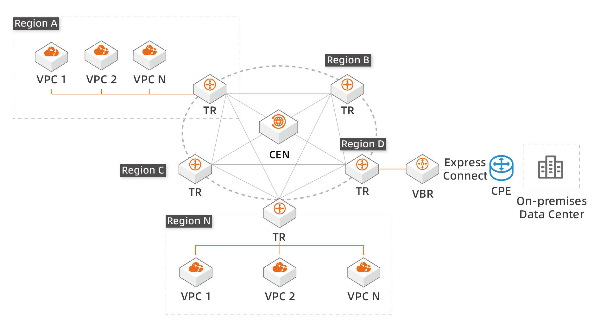
Transit Router (TR)
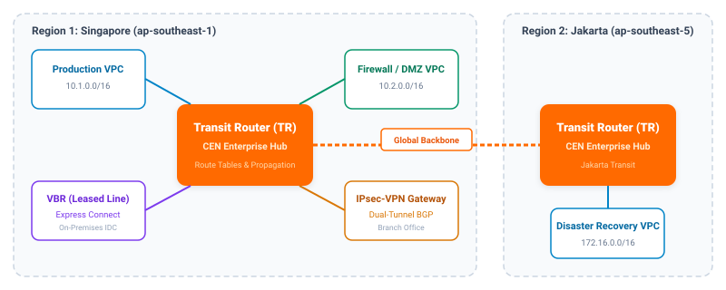
Route Table Associations
Every network attachment (VPC, VBR, VPN) binds to a specific Transit Router route table, defining the routing policy for inbound traffic from that attachment.
Route Propagations
Attachments automatically publish their CIDR blocks into designated TR route tables, eliminating the need to manually update static routing tables across VPCs.
Centralized DMZ Egress
Route all internet-bound and external traffic from multiple branch VPCs through a centralized Shared Services Firewall VPC for unified security filtering.
IPsec-VPN (Site-to-Site)
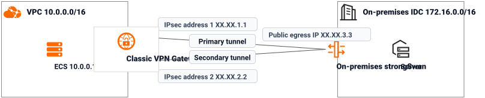
- Active-Active Dual Tunnels: Each VPN Gateway deploys two independent IPsec tunnels terminating on separate gateway instances across availability zones for 99.99% SLA.
- BGP Dynamic Routing: Supports dynamic Border Gateway Protocol (BGP) routing for automated sub-second route failover and health monitoring (DPD).
- ECMP Load Balancing: Supports Equal-Cost Multi-Path (ECMP) routing to double effective throughput across both tunnels simultaneously.
SSL-VPN (Client-to-Site)
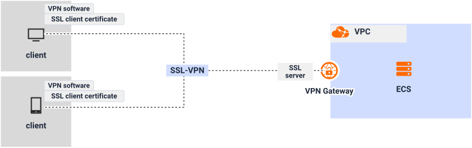
- Client-Initiated Dial-Up: Remote engineers connect laptops directly to the private VPC using OpenVPN-compliant client software (Windows, macOS, Linux, Android, iOS).
- Zero Public IP Requirement: Clients connect over standard dynamic Internet connections (home broadband, mobile hotspots) without requiring static public IPs.
- Private Intranet Access: Enables direct access to ECS private IPs without exposing management ports (SSH 22, RDP 3389) to the public Internet.
Express Connect
- Physical Fiber: Dedicated, unshared telecommunication circuit connecting on-premises IDCs to Alibaba Cloud Access Points.
- Deterministic Performance: Zero internet jitter, zero packet loss, and stable sub-millisecond network latency.
- High Bandwidth Quotas: Port speeds ranging from 1 Gbps to 100 Gbps to handle massive database replication and big data transfers.
- Enterprise Compliance: Complies with strict financial and healthcare regulations prohibiting transmission of sensitive data over the public Internet.
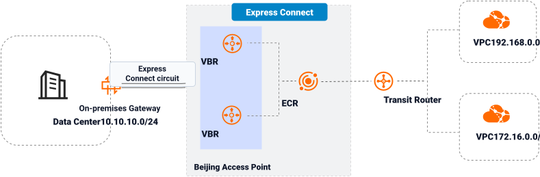
Alibaba Cloud Public DNS
- Global BGP Anycast Fabric: Deployed across global Anycast scrubbing nodes, delivering ultra-low-latency recursive and authoritative resolution worldwide.
- Intelligent Line-Based Routing: Directs visitors to the optimal server IP based on geographic location (country/province/city) and carrier network (China Telecom, Unicom, Mobile, International).
- Enterprise Security & DNSSEC: Protects domain records with cryptographic DNSSEC signatures and built-in multi-gigabit anti-DDoS mitigation against volumetric attacks.
- High-Frequency Record Updates: Supports sub-second TTL propagation, rich resource record types (A, AAAA, CNAME, TXT, MX, CAA, SRV), and automated API management.
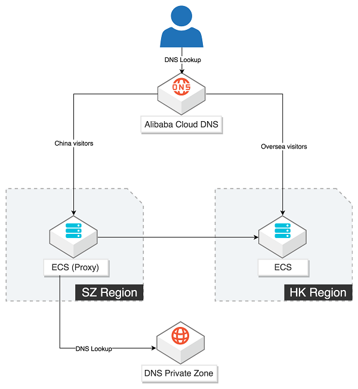
DNS PrivateZone
A fully managed private DNS resolution service operating strictly within your authorized VPC environments:
- Custom Private TLDs: Author custom private domains (e.g.
api.prod.corp,db.internal.local) completely hidden from public DNS queries. - Zero Public Exposure: DNS query traffic never leaves Alibaba Cloud's private datacenter network, preventing DNS poisoning and interception.
- Automated Split-Horizon DNS: Resolve the exact same domain name to private internal IPs when queried from inside VPCs, while public users resolve to public load balancer IPs.
Multi-VPC & Hybrid Forwarding
- Cross-VPC Sharing: Bind a single PrivateZone to dozens of VPCs across multiple accounts within the same region or globally.
- Outbound Endpoint Forwarding: Forward private cloud DNS requests for on-premises domains (e.g.
*.corp.internal) over VPN/Express Connect to on-premises DNS servers. - Inbound Endpoints: Allow on-premises datacenter servers to query and resolve Alibaba Cloud PrivateZone records.
Global Traffic Manager (GTM)
- DNS-Level Traffic Director: Directs traffic at the DNS layer using CNAME access domains, steering clients directly to the optimal healthy endpoint without proxy or bandwidth bottlenecks.
- Proactive Health Probing: Continuously monitors application service availability across regions using ping, TCP port, and HTTP/HTTPS synthetic probes.
- Automated Disaster Recovery: Automatically isolates faulty instances or degraded datacenters, shifting traffic to standby IP pools with sub-minute convergence (RTO < 60s).
- Hybrid & Multi-Cloud Native: Schedules and load-balances traffic across Alibaba Cloud instances, third-party clouds (AWS, Azure), and on-premises IDCs simultaneously.
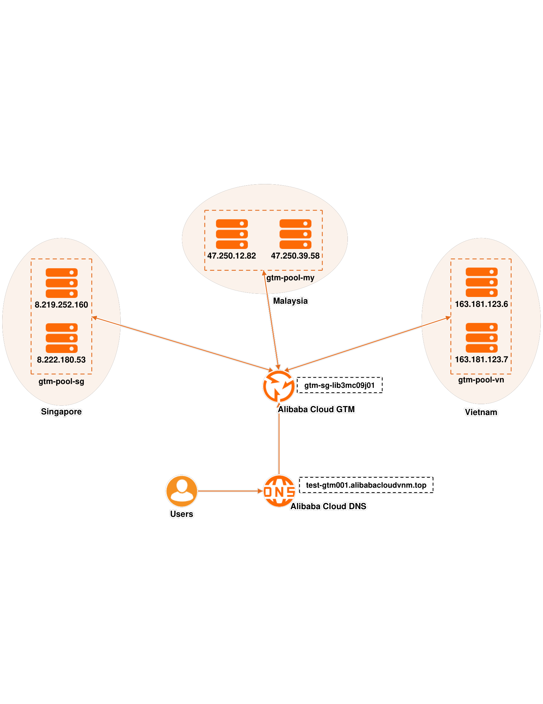
DHCP Options Sets
By default, newly provisioned ECS instances receive Alibaba Cloud's default internal DNS servers (100.100.2.136 / 100.100.2.138). DHCP Options Sets allow overriding this behavior:
- Domain Name Suffix: Configure a default search domain suffix (e.g.
mysite.com) automatically populated into/etc/resolv.confon Linux or network adapter settings on Windows. - Custom DNS Servers: Specify up to 4 custom DNS server IP addresses (e.g. on-premises Active Directory domain controllers).
- Multi-VPC Association: Associate a single DHCP options set with up to 10 VPCs within the same region.
- Reboot Persistence: Settings are refreshed automatically via internal DHCP leases and persist across instance reboots.
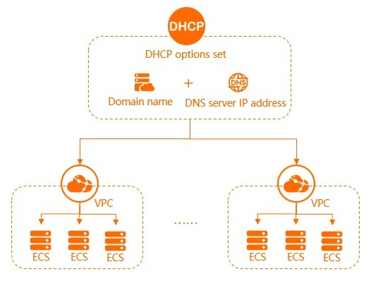
VPC Flow Logs
Captures metadata of IP traffic entering and leaving network interfaces across your VPC infrastructure:
- Flexible Capture Scope: Enable at the VPC level, entire vSwitch, or specific Elastic Network Interfaces (ENIs).
- Comprehensive 5-Tuple Data: Captures Source IP, Destination IP, Source Port, Destination Port, Protocol, Action (ACCEPT / REJECT), byte count, and packet count.
- Simple Log Service (SLS) Integration: Real-time streaming into SLS for indexation, querying, automated alerting, and long-term compliance archiving.
- Troubleshooting & Security Auditing: Instantly identify whether dropped packets were blocked by a stateless Network ACL or stateful Security Group.
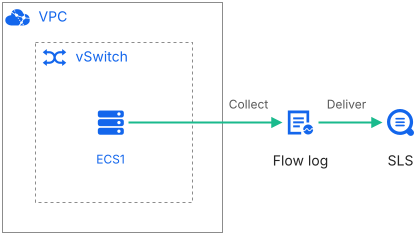
REJECT traffic, instantly alerting security operations to potential port scans and unauthorized connection attempts.
Traffic Mirroring
Duplicates real-time network packets from virtual interfaces without disrupting active production services:
- Zero Compute Impact: Traffic cloning occurs at the virtualized hypervisor layer with zero CPU or throughput performance overhead on source ECS instances.
- Granular Filter Rules: Selectively mirror specific inbound or outbound packets using 5-tuple rule criteria (e.g. mirror only traffic destined for ports 80/443).
- Flexible Mirror Destinations: Forwards cloned packets directly to an internal-facing Classic Load Balancer (CLB), Gateway Load Balancer endpoint (GWLBe), or secondary ENI of an Intrusion Detection System (IDS/IPS).
- Forensics & Compliance: Essential for PCI-DSS compliance, forensic malware behavioral analysis, network protocol troubleshooting, and zero-impact auditing.
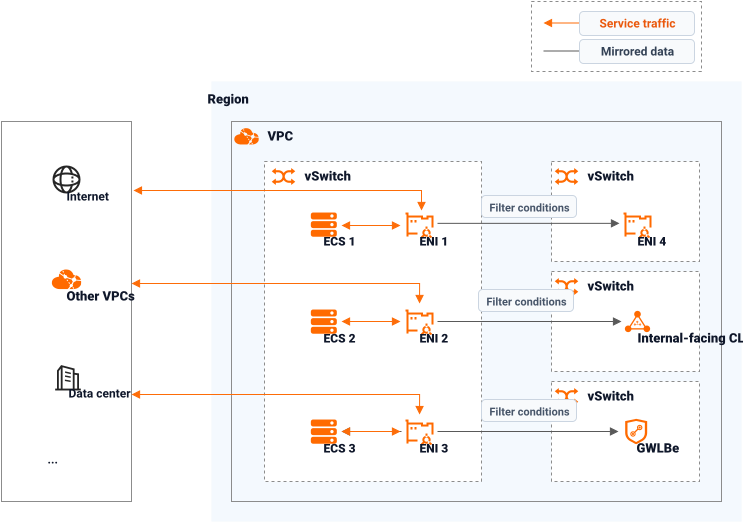
Networking Pricing
1. Core VPC & Security (Free Baseline)
Zero Cost- VPC, vSwitches & Route Tables: 100% Free. No creation, instance, or management fees.
- Security Groups & Network ACLs: 100% Free built-in stateful and stateless firewall engines.
- Intra-Zone Data Transfer: Free for all communication within the same Availability Zone.
- Inter-Zone Transfer: Minor per-GB data transfer fee when crossing AZs in the same region.
2. Public Gateways & Elastic IP
Public Edge- Elastic IP (EIP): Free allocation fee while bound to an active resource; hourly idle fee if unbound. Outbound bandwidth billed by traffic (GB) or fixed bandwidth (Mbps).
- Internet NAT Gateway: Hourly instance fee + Capacity Units (CU for connection handling and data processing) + attached EIP public bandwidth.
- Common Bandwidth Package (CBWP): Pools multiple EIPs to save 30%–50% on egress.
3. Enterprise Transit & Hybrid Connect
Interconnect- Transit Router (TR / CEN): Hourly attachment fee per connection (VPC / VBR / VPN) + per-GB data processing fee + cross-region enterprise bandwidth (CDT).
- VPN Gateway: Hourly or monthly gateway specification fee + outbound public data.
- Express Connect: Dedicated physical port fee (1G / 10G / 100G) + outbound data transfer.
4. DNS, Traffic Management & Telemetry
Operations- DNS PrivateZone: Zone management fee (per zone/month) + DNS query resolution fee (per million queries).
- Global Traffic Manager (GTM): Monthly instance fee (Standard / Ultimate) + health checks.
- VPC Flow Logs & Traffic Mirroring: Zero feature license fee; pay only for Simple Log Service (SLS) log storage/indexing or target mirror destination instances.
Traffic vs. Bandwidth Cost
Pay-by-Traffic (Outbound Data Transfer)
Spiky & Unpredictable- Billing Metric: Billed strictly on actual public outbound (egress) data transfer per Gigabyte (GB). Inbound (ingress) data transfer is 100% free.
- Provisioned Peak Cap: You configure a maximum bandwidth limit (e.g., 1 to 200 Mbps) to safeguard against DDoS attacks or runaway surges, but pay only for bytes sent.
- Billing Formula:
Total Cost = Outbound Data Volume (GB) × Unit Price/GB. - Workload Profile: Ideal for unpredictable, intermittent, or bursty traffic patterns with low baseline utilization (e.g., enterprise portals, web APIs, dev/test).
- Discounts: Lower costs by purchasing prepaid Data Transfer Plans or leveraging Cloud Data Transfer (CDT) free monthly allowances.
Pay-by-Bandwidth (Fixed Peak Throughput)
Continuous & Predictable- Billing Metric: Billed based on the fixed allocated peak bandwidth capacity (in Mbps) per unit of time (hourly Pay-As-You-Go or Subscription term).
- Unlimited Egress Volume: Transmit unlimited data volume within the allocated bandwidth pipe without any per-GB data transfer charges.
- Tiered Stepped Pricing: Stepped pricing structure with a lower baseline price for 1–5 Mbps, and a higher stepped tier per Mbps for bandwidth exceeding 5 Mbps.
- Workload Profile: Ideal for continuous, 24/7 high-volume streaming, live broadcasts, software distribution repositories, and database replication.
- Bandwidth Sharing: Pool and smooth bandwidth across multiple instances using a Common Bandwidth Package (CBWP).
Practice Scenario 1: Multi-VPC Transit Architecture
- A Configure point-to-point VPC Peering connections between each branch VPC and the Shared Services VPC.
- B Deploy Cloud Enterprise Network (CEN) with regional Transit Routers (TR) and enable route propagation for all attached VPCs.
- C Establish single-tunnel IPsec-VPN connections between every branch VPC and the Shared Services VPC.
- D Deploy multiple Internet NAT Gateways in each branch VPC and configure port-forwarding DNAT rules.
Scenario 1: Solution & Architectural Analysis
Practice Scenario 2: Stateless Network ACL Troubleshooting
- A Security Groups do not evaluate traffic when Network ACLs are associated with a vSwitch.
- B The Network ACL requires an outbound rule permitting destination port 443 back to the client.
- C Network ACLs are stateless; an outbound rule permitting ephemeral ports (1024–65535) is required for response packets.
- D The vSwitch must be converted to an IPv6 dual-stack subnet to support Network ACL stateful return flows.
Scenario 2: Solution & Architectural Analysis
Practice Scenario 3: High-Availability Hybrid Cloud Failover
- A Deploy an additional single-tunnel IPsec-VPN and configure manual route switching scripts via OpenAPI.
- B Provision an Internet NAT Gateway and configure port-forwarding DNAT rules to the on-premises firewall IP.
- C Configure a secondary Express Connect circuit from the exact same physical carrier entering the same datacenter duct.
- D Deploy a Dual-Tunnel IPsec-VPN Gateway connected to CEN with dynamic BGP routing and BFD enabled alongside the VBR.
Scenario 3: Solution & Architectural Analysis
Module 03: Virtual Private Cloud (VPC)
Module 04: Server Load Balancer (SLB)